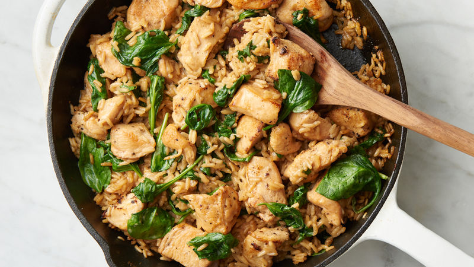

One-Pan Chicken Rice

One-pan chicken rice is, as its name suggests, a simple dish that can be made all in one pan. It's healthy and sure to impress. This particular recipe is for two servings.
Ingredients
- 2 tbs olive oil
- 4 carrots diced
- salt and pepper to taste
- 1 cup rice
- 2 tsp onion powder
- 2 tsp garlic powder
- 750ml chicken stock
- 400g chicken breast or tenderloins
- 100g green beans or preferred leafy greens
- 1/4 bunch fresh roughly chopped parsley dry parsley also fine
Note that this recipe is for two servings.
Steps
- Heat oil in a large pan over medium-low heat and saute carrots for 5 - 10 minutes, or until tender. Season well with salt and pepper.
- Add rice and stir for a minute.
- Add onion powder, garlic powder, and stock. Bring to a boil then reduce to a simmer. Cover and simmer gently for 20 minutes, stirring regularly. Taste and adjust seasoning as required.
- Add chicken in an even layer, cover and simmer for another 15 minutes. Add more water or stock if necessary.
- Remove chicken from the pan and set aside. Add beans and continue to cook for another 5 minutes.
- Dice chicken while beans are cooking and then return to pan.
- Divide between bowls and serve topped with parsley.